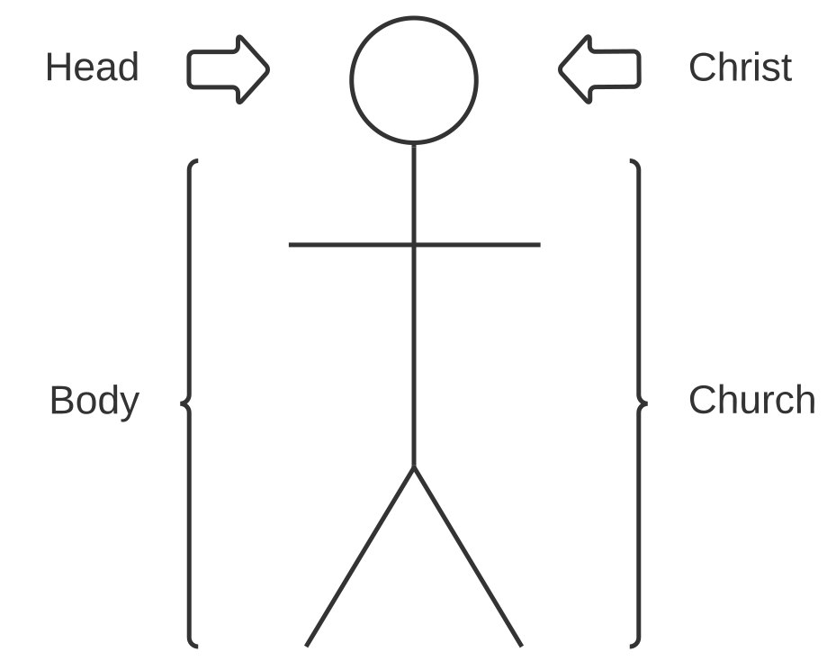
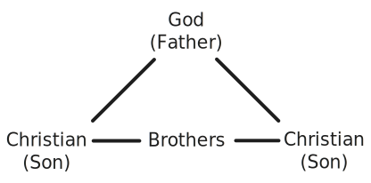

Purpose: To gain a deeper understanding of God's eternal plan for the church — and to expose the false traditions that have led to the creation of religious denominations. In the Kingdom study, we see how God foretold the coming of the church throughout the centuries. Jesus preached for 40 days after His resurrection about the coming of the Kingdom of God.
COLOSSIANS 1:15-18
- The church is the body of Christ. The body needs the head. Christ is the head over the body. Could you separate your head from your body? The church is essential to Christianity! There is no such thing as solo Christians. You have to be connected to the body.

EPHESIANS 2:19-22
- We were once strangers to Christ, but now we are members of His household. The church is not merely a meeting — it is a household, a pillar, and the foundation of the truth. (1 Timothy 3:15)
- The church is the family of God.

- The cornerstone of the church is Christ, and the foundation is made up of the Apostles and Prophets. The Apostles represent the New Testament, and the Prophets represent the Old Testament. Together, they form the biblical foundation of the church.
WHAT HAPPENS AT BAPTISM?
- 1 Corinthians 12:12-13 — We are all baptized into the body of Christ, which is the church.
- Romans 6:3-4 — We are also baptized into Christ Himself. Baptism is the moment we become Christians — sons and daughters of God — and at the same time, members of the church, the family of God.
1 CORINTHIANS 1:10-13
- There should be no divisions within the church. Following personalities — and eventually their writings or traditions — has caused these divisions.
- The word "denomination" (from Latin) means "a group under a name." This is unbiblical.
- Explain the graphic below.

EPHESIANS 4:4-6
- The Bible teaches that there is only one body of Christ. (Romans 12:4-5; 1 Corinthians 12:12-13)
- God sees one church — all baptized disciples around the world who are committed to obeying His Word. This is called the "church universal" — the one true church.
- A local congregation is called the "visible church." In the first century, all the "visible churches" made up the "church universal." However, because many visible churches today have departed from true doctrine — and because not all sold-out baptized disciples are in the same fellowship — we should strive to be part of a local congregation where everyone is committed to living by God's Word.
- The Greek word for "church" is "ekklesia," which means "assembly" or "called out." ("Ek" means "out," and "kaleo" means "to call.") To be a disciple is to be called out from the world. Therefore, the church in the Bible was the assembly of the called out.
FIVE CHURCH-BUILDING CONVICTIONS
- The dream to evangelize all nations in this generation (Acts 13:47)
- Discipling is a command from God — not optional (Matthew 28:18-20)
- A central leadership under a central leader (Numbers 27:12-18; 1 Corinthians 4:15- 17)
- A Bible church — not just a New Testament church (2 Timothy 3:14-17)
- Speak where the Bible speaks, and be silent where the Bible is silent (Genesis 2:19)
1 CORINTHIANS 12:14-27
- We need the body of Christ active in our lives.
- Every part of the body needs one another.
- Be relationally involved in the life of the church.
HEBREWS 10:23-25
- We must not give up meeting together by missing church gatherings. Would you choose to live in a place without a church of sold-out disciples?
- The fellowship helps us remain unswerving in our commitment.
- Another purpose of fellowship is to encourage one another to remain faithful.
- We must prioritize all meetings of the body. (e.g., Sunday and midweek services, Bible Talks, devotionals, discipling times, Global Conferences, etc.)
1 CORINTHIANS 7:39
- Marriage must be "in the Lord."
- Dating, like marriage, is a partnership where you are "yoked together." (2 Corinthians 6:14-18)
- Disciples should date and marry only other disciples.
THE GRACE OF GIVING (CONTRIBUTION)
1 CORINTHIANS 16:1-2
- Our weekly contribution should be a thoughtful, deliberate spiritual decision.
- This is a command of God.
2 CORINTHIANS 9:6-8
- Giving should come from a cheerful and generous heart.
- Our mission contribution serves to fulfill Jesus' dream of world evangelism.
- This is collected once or twice a year to support world evangelism.